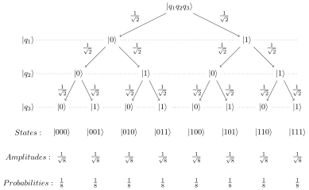

Quantum States for Quantum Computing
$$ \text{ A } \langle Womanium | Quantum \rangle \text{ 2023 Project} $$ Prepared by Ren Tristan A. de la CruzIntroduction
ThisClassical Bit
The classical bit is the smallest unit of information. It is the amount of information you gain when you received an answer to a yes-or-no question where it is equally likely for the answer to be a 'yes' or a 'no'. It is also amount of information you gain when the result of a fair coin toss is revealed to you. The classical bit specifies which one of the two possible options occurred or was selected.
The term bit is the contraction of "binary digit". Digits \( \texttt{0} \) and \( \texttt{1} \) are often used as the values of the classical bit.
Bit Strings
fsfs
Quantum Bit
Basis \(\{\ket{0}, \ket{1}\}\)
Superposition
$$ \ket{\psi} = \alpha \ket{0} + \beta \ket{1} $$ Born Rule: $$ |\alpha|^2 + |\beta|^2 = 1 $$Qubit Examples
| Qubit State | Amplitude of Basis: | Probability of Basis: | ||
|---|---|---|---|---|
| \( \ket{0}\) | \( \ket{1}\) | \( \ket{0}\) | \( \ket{1}\) | |
| \( \ket{\psi_1} = 1 \ket{0} + 0 \ket{1} = \ket{0} \) | 1 | 0 | \( \left| 1 \right|^2 = 1\) | \( \left| 0 \right|^2 = 0\) |
| \( \ket{\psi_2} = 0 \ket{0} + 1 \ket{1} = \ket{1} \) | 0 | 1 | \( \left| 0 \right|^2 = 0\) | \( \left| 1 \right|^2 = 1\) |
| \( \ket{\psi_3} = \frac{1}{\sqrt{2}} \ket{0} + \frac{1}{\sqrt{2}} \ket{1} \) | \( \frac{1}{\sqrt{2}} \) | \( \frac{1}{\sqrt{2}} \) | \( \left|\frac{1}{\sqrt{2}}\right|^2 = \frac{1}{2} \) | \( \left|\frac{1}{\sqrt{2}}\right|^2 = \frac{1}{2} \) |
| \( \ket{\psi_4} = \frac{1}{\sqrt{4}} \ket{0} + \frac{\sqrt{3}}{\sqrt{4}} \ket{1} \) | \( \frac{1}{\sqrt{4}} \) | \( \frac{\sqrt{3}}{\sqrt{4}} \) | \( \left|\frac{1}{\sqrt{4}}\right|^2 = \frac{1}{4} \) | \( \left|\frac{\sqrt{3}}{\sqrt{4}}\right|^2 = \frac{3}{4} \) |
| \( \ket{\psi_5} = \frac{\sqrt{5}}{\sqrt{8}} \ket{0} + \frac{\sqrt{3}}{\sqrt{8}} \ket{1} \) | \( \frac{\sqrt{5}}{\sqrt{8}} \) | \( \frac{\sqrt{3}}{\sqrt{8}} \) | \( \left|\frac{\sqrt{5}}{\sqrt{8}}\right|^2 = \frac{5}{8} \) | \( \left|\frac{\sqrt{3}}{\sqrt{8}}\right|^2 = \frac{3}{8} \) |
Qubits as Vectors
Qubits as Binary Trees
Horizontal tree
Quantum States
Horizontal Tree


Let the first qubit be \(\ket{q_1}\): $$ \ket{q_1} = \alpha \ket{0} + \beta \ket{1} = \begin{bmatrix} \alpha \\ \beta \end{bmatrix} $$ Let the second qubit be \(\ket{q_2}\): $$ \ket{q_2} = \gamma \ket{0} + \delta \ket{1} = \begin{bmatrix} \gamma \\ \delta \end{bmatrix} $$ The tensor product of \(\ket{q_1}\) and \(\ket{q_2}\), denoted by \(\ket{q_1} \otimes \ket{q_2}\) (or simply \(\ket{q_1q_2}\) ), is computed as follows: $$ \begin{align*} \ket{q_1} \otimes \ket{q_2} &= \ket{q_1q_2} \\ &= (\alpha \ket{0} + \beta \ket{1}) \otimes (\gamma \ket{0} + \delta\ket{1}) \\ &= [(\alpha \ket{0}) \otimes (\gamma \ket{0} + \delta \ket{1})] + [(\beta \ket{1}) \otimes (\gamma \ket{0} + \delta \ket{1})] \\ &= [\alpha \gamma \ket{00} + \alpha \delta \ket{01}] + [\beta \gamma \ket{10} + \beta \delta \ket{11}] \\ &= \alpha \gamma \ket{00} + \alpha \delta \ket{01} + \beta \gamma \ket{10} + \beta \delta \ket{11} \\ \end{align*} $$ As column vectors: $$ \begin{align*} \ket{q_1q_2} &= \ket{q_1} \otimes \ket{q_2} \\ &= \begin{bmatrix} \alpha \\ \beta \end{bmatrix} \otimes \begin{bmatrix} \gamma \\ \delta \end{bmatrix} \\ &= \begin{bmatrix} \alpha \begin{bmatrix} \gamma \\ \delta \end{bmatrix} \\ \beta \begin{bmatrix} \gamma \\ \delta \end{bmatrix} \end{bmatrix} = \begin{bmatrix} \alpha \cdot \gamma \\ \alpha \cdot \delta \\ \beta \cdot \gamma \\ \beta \cdot \delta \end{bmatrix} \\ &= \begin{bmatrix} \alpha \gamma \\ \alpha \delta \\ \beta \gamma \\ \beta \delta \end{bmatrix} \end{align*} $$
Entanglement of Qubits
Non-entangled 3-qubit state:

Entanglement \(q_1 = q_3\):
Entanglement \(q_1 \neq q_2\):

Entanglement \(q_1 = q_2 = q_3\):